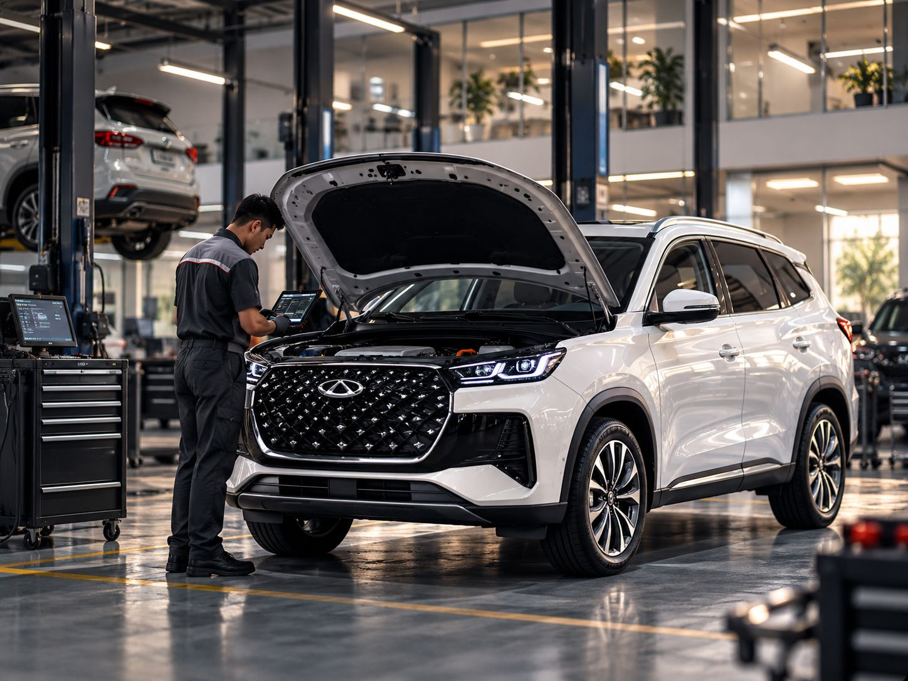

Jennete Rent Design System
Fondasi visual untuk situs sewa mobil jangka panjang korporat. Semua token, komponen, dan ornamen di sini diambil dari situs yang sudah berjalan: index.html, solusi-bisnis.html, dan wuling-cortez-darion.html. Karakternya Corporate Professional dengan aksen ungu premium.
Color
Dua lapis token. Primitive menyimpan nilai mentah, semantic menyimpan makna (bg, text, border, brand, status). Komponen hanya memakai token semantic. Klik swatch untuk menyalin nama variabelnya.
Semantic
Gradien & scrim
Aturan pemakaian
Ungu = aksi
Brand #5D447D dipakai untuk CTA utama, state terpilih, ikon, dan link "lihat semua". Jangan dipakai untuk blok teks panjang atau latar section penuh.
Ink = struktur
Hampir semua UI dibangun dari ink + putih. Section gelap (bg-inverse) dipakai untuk memberi ritme: trust strip, cara sewa, komparasi, footer.
Hijau = WhatsApp
Hijau #1A7F45 khusus untuk kanal WhatsApp dan indikator "live". Status sukses di form memakai token yang sama.
Typography
Albert Sans (400 · 500 · 600 · 700) untuk heading dan body. Heading memakai 600 dengan tracking rapat (-0.02 sampai -0.04em). Ukuran memakai clamp() agar fluid dari 375px sampai 1440px.
Type scale
| Contoh | Token | Size | LH | Tracking | Weight |
|---|
Pola teks
Armada pilihan untuk operasional bisnis
Section heading selalu diikuti lead paragraph dengan maksimal 56 karakter per baris.
Kirim kebutuhan
Angka besar dengan weight 500 dan warna muted menandai urutan langkah.
Spacing & Layout
Grid dasar 4px. Section memakai padding fluid clamp(4rem, 8vw, 8rem). Container maksimal 1440px dengan gutter fluid.
| Token | Value |
|---|
| Breakpoint | Min/Max | Perubahan |
|---|---|---|
sm | 520px | CTA header disembunyikan, form 1 kolom |
md | 760px | Hero stack vertikal, trust 1 kolom |
lg | 900px | Grid 3 → 1, steps 2 kolom, timeline vertikal |
xl | 1100px | Nav desktop → burger + drawer |
| container | 1440px | .wrap |
| Size | Value | Dipakai di |
|---|---|---|
--size-control | 48px | Tinggi minimum button & input (touch target) |
--size-control-sm | 44px | Button di header, segmented |
--size-header | 72px | Tinggi bar header |
--size-icon-node | 56px | Node timeline |
Radius, Shadow, Motion
Radius kecil memberi kesan korporat yang tegas. Bayangan dipakai hemat: glow ungu hanya di CTA utama dan ikon. Gerak memakai satu easing dengan durasi pendek.
Radius
Elevation
Motion
| Token | Value | Pemakaian |
|---|
Semua animasi dimatikan saat prefers-reduced-motion: reduce.
Ornamen & Visual
Ornamen khas Jennete sedikit dan konsisten. Fotografi kendaraan dan servis menjadi visual utama. Ungu muncul sebagai cahaya, halo, dan gradien halus, tidak pernah sebagai blok datar yang besar.
.glow: radial ungu di pojok kanan atas section gelap (Cara sewa, cover).
.ic-halo · .ic-tile.lg.solid · .ic-tile: gradien ikon + cincin halo 6px.

Glass stat card di atas foto: bg-glass-strong + blur-panel.
Fotografi

16:9 · Hero / Blog. Suasana nyata (bengkel, kantor, jalan), cahaya natural, ada ruang negatif di kiri untuk teks.
4:3 · Armada. Mobil 3/4 depan, latar studio terang dan netral, posisi konsisten antar unit.
Placeholder. .pic dengan gradien abu-abu + garis mobil, dipakai saat foto belum tersedia.
Ikonografi
Stroke 1.7 sampai 2px, round cap/join, viewBox 24, warna currentColor. Ukuran 16px inline, 21 sampai 24px dalam tile.
Button & Link
Satu CTA utama per area (gradien ungu). Aksi sekunder memakai outline. Di atas foto atau section gelap, pakai varian white dan ghost-white.
Varian × state
| Varian | Default | Hover | Disabled | Loading |
|---|---|---|---|---|
.btn-primary | ||||
.btn-outline | ||||
.btn-wa |
Ukuran, icon button, link
Form controls
Diambil dari modal "Minta Penawaran" dan "Reservasi". Tinggi minimum 48px, border 1.5px, fokus berupa border ungu + ring 3px.
Tag, Chip, Badge
Tag kotak (radius 4) untuk atribut kendaraan. Chip pill untuk eyebrow atau label kategori. Badge berwarna hanya untuk status.
Cards
Card memakai radius 8px dan tidak memakai shadow. Pemisahnya datang dari kontras latar (putih di atas bg-soft). Hover: foto zoom 1.04 dan judul ber-underline.
Vehicle card + rail
Wuling Cortez Darion
MPV keluarga dan operasional, 7 kursi, otomatis
Chery Tiggo 8 CSH
SUV 7 kursi, 1.500 cc PHEV, otomatis
Feature, blog, promo, basic
Servis berkala terjadwal
Tiap 10.000 km atau 6 bulan. Tim kami mengingatkan sebelum jadwalnya tiba.

Sewa atau beli mobil operasional: hitungan untuk perusahaan
Bantuan darurat di jalan 24/7
Derek, ban kempes, atau mogok. Tim kami datang ke lokasi.
Tim darurat online0888-1111-508Card default
Border 1px, latar putih. Untuk konten informatif.
Card soft
Untuk dipakai di atas latar putih.
Card inverse
Untuk highlight atau mega menu.
Tabs, Segmented, Accordion, Dropdown
Segmented untuk filter biner (Mobil/Motor). Tabs underline untuk konten paralel di halaman detail. Accordion memakai <details> native. Dropdown memakai permukaan yang sama dengan mega menu.
Berapa lama durasi sewa minimum?
Apakah harga sudah termasuk servis?
Dokumen apa saja yang dibutuhkan?
Modal & Toast
Modal memakai <dialog> native dengan radius 16px, backdrop ink 55% + blur 4px. Di layar < 560px, modal berubah menjadi bottom sheet. Toast memakai permukaan inverse dengan garis aksen di sisi kiri.
Pratinjau statis
Hero banner: full-width slider
Foto full-bleed dengan efek Ken Burns (scale 1.08 ke 1 selama 7 detik) dan scrim 3 lapis (kiri, bawah, atas). Isi: eyebrow + chip, H1 display, sub, sepasang CTA, dan fact strip. Navigasi berupa progress bar per slide, tombol prev/next/pause, dan counter.
Mobile (< 760px): foto mengisi 62% atas, scrim berganti dari bawah, konten turun ke bawah, fact strip dan label dot disembunyikan.
Trust strip, Service showcase, Steps
Pola section yang berulang di semua halaman.
Trust strip (langsung di bawah hero)- Terdaftar di e-Katalog LKPPSiap untuk pengadaan instansi pemerintah
- Ratusan unit mobil & motorDari city car hingga kendaraan premium
- Bantuan darurat 24 jamTim siaga di seluruh Jabodetabek
Servis tiap 10.000 km atau 6 bulan, mana yang lebih dulu. Tim kami mengingatkan sebelum jadwalnya tiba.
Perawatan di bengkel resmi agar garansi pabrikan tetap berlaku.
Derek, ganti ban, hingga unit pengganti saat kendaraan bermasalah.
Kirim kebutuhan
Jumlah unit, jenis kendaraan, durasi, dan kebutuhan sopir.
Terima penawaran
Penawaran tertulis yang bisa langsung diproses di internal.
Verifikasi
Dokumen perusahaan dan survei lokasi oleh tim kami.
Unit diantar
Kendaraan siap pakai diantar ke lokasi Anda.
Cara sewa, empat langkah
Section gelap dengan radial glow. Garis progres terisi dan node menyala satu per satu saat section masuk viewport.
- Langkah 01
Konsultasi
Ceritakan kebutuhan armada Anda.
- Langkah 02
Penawaran
Terima penawaran resmi tertulis.
- Langkah 03
Verifikasi
Dokumen dan survei domisili.
- Langkah 04
Unit diantar
Siap pakai di lokasi Anda.
Comparison table
Dipakai di halaman Solusi Bisnis dan detail mobil. Selalu di section gelap. Baris di-highlight ungu 10% saat hover, kolom bisa di-scroll horizontal di mobile.
| Sewa Jennete | Beli tunai | Kredit | |
|---|---|---|---|
| Modal awal | Tanpa DP | 100% harga unit | DP 20–30% |
| Servis & asuransi | Termasuk | Biaya terpisah | Biaya terpisah |
| Unit pengganti | Disediakan | Tidak ada | Tidak ada |
Isi tabel adalah contoh. Verifikasi ke konten final situs.
Siap menyiapkan armada untuk tim Anda?
Kirim kebutuhan, kami siapkan penawaran resmi dalam 1×24 jam kerja.
Aksesibilitas
Rasio kontras dihitung otomatis di browser dari token (WCAG 2.x). Target AA: 4.5:1 untuk teks normal, 3:1 untuk teks besar (≥ 24px, atau ≥ 18.66px bold).
| Pasangan | Contoh | Rasio | AA normal | Catatan |
|---|
Temuan yang perlu diputuskan
Tombol WhatsApp
green.600 diganti dari #1F8F4E (4.12:1) ke #1A7F45 (sekitar 5.0:1). Teks putih 16px sekarang lolos AA, dan hover #18763F tetap lebih gelap.
Teks placeholder foto
ink.500 #8A9197 di atas putih hanya sekitar 3.2:1. Pakai hanya untuk ikon dekoratif, jangan untuk teks yang harus dibaca.
Checklist
- Fokus selalu terlihat:
:focus-visibleberupa outline 2px currentColor atau ring ungu 3px pada input. - Touch target minimal 44px (
--size-control-sm), default 48px. - Slider hero bisa di-pause, dan autoplay mati saat
prefers-reduced-motion. - Ikon dekoratif memakai
aria-hidden, tombol yang hanya berisi ikon wajib punyaaria-label. - Error form memakai
aria-invalid="true"+aria-describedbyke.fm-err.
Cara pakai
Struktur file
design-system/ ├── tokens/ │ ├── design-tokens.json ← single source of truth │ ├── tokens.css ← generated │ └── tokens.js ← generated (dipakai styleguide) ├── build-tokens.py ├── components.css ├── assets/ └── index.html ← styleguide ini
Alur kerja
- Ubah nilai di
design-tokens.json. - Jalankan
python3 design-system/build-tokens.py. - Di halaman, muat
tokens.csslalucomponents.css. - Nama class mengikuti situs (
.btn-dark,.vcard,.how, dst.).tokens.cssjuga menyediakan alias lama (--ink,--brand,--r…), jadi CSS situs yang sekarang tetap jalan. - Komponen baru: pakai token semantic
--color-*, jangan hex mentah.